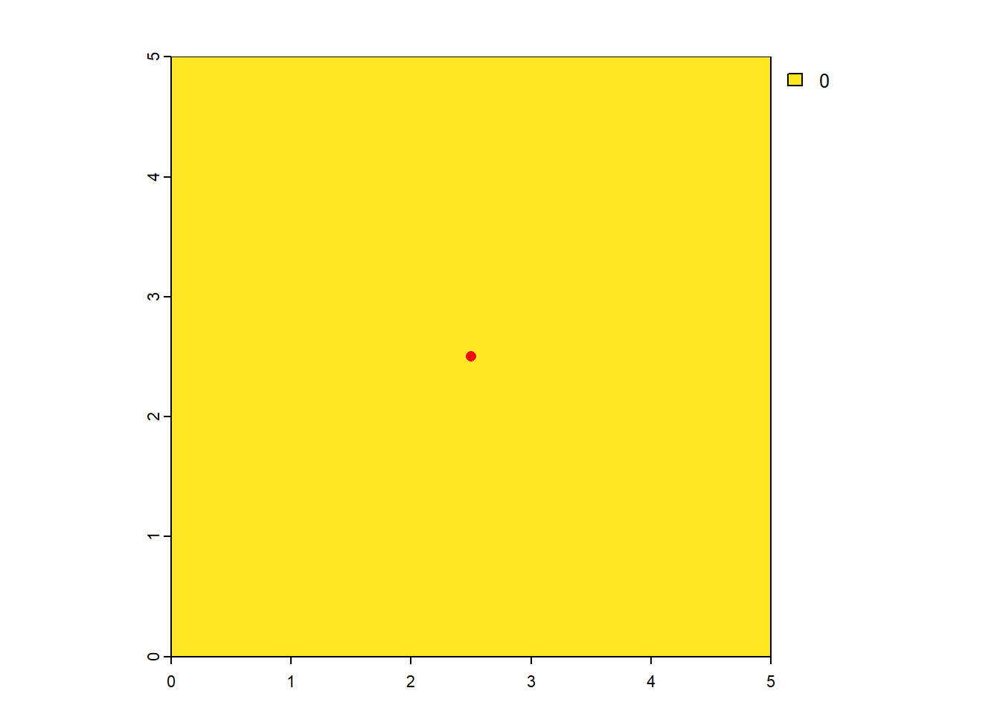
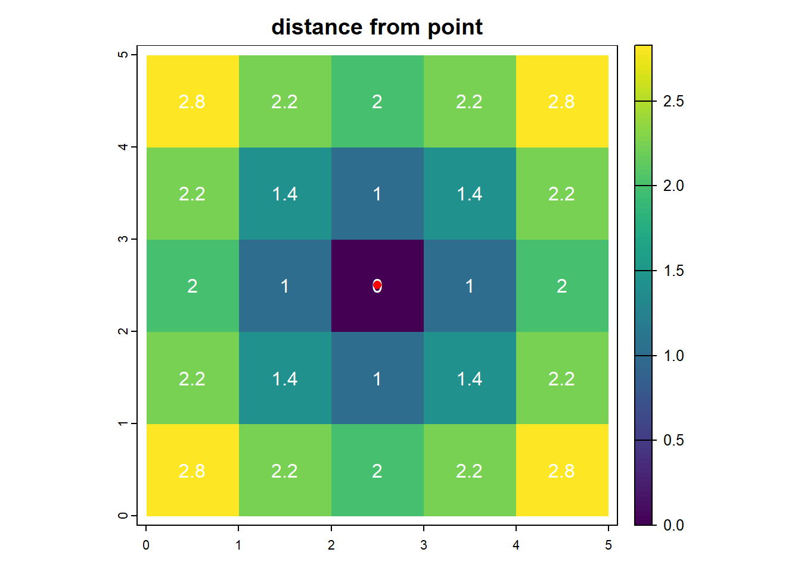
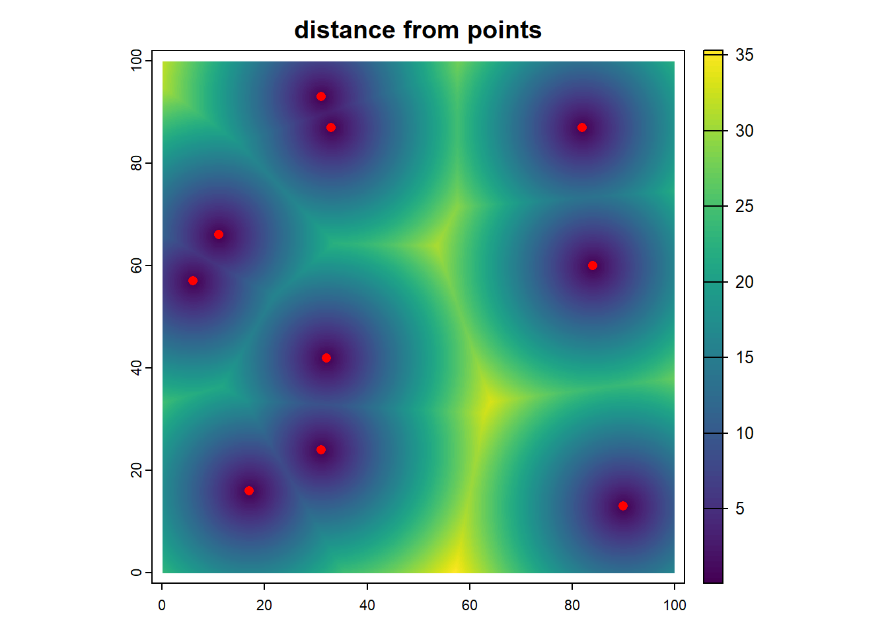
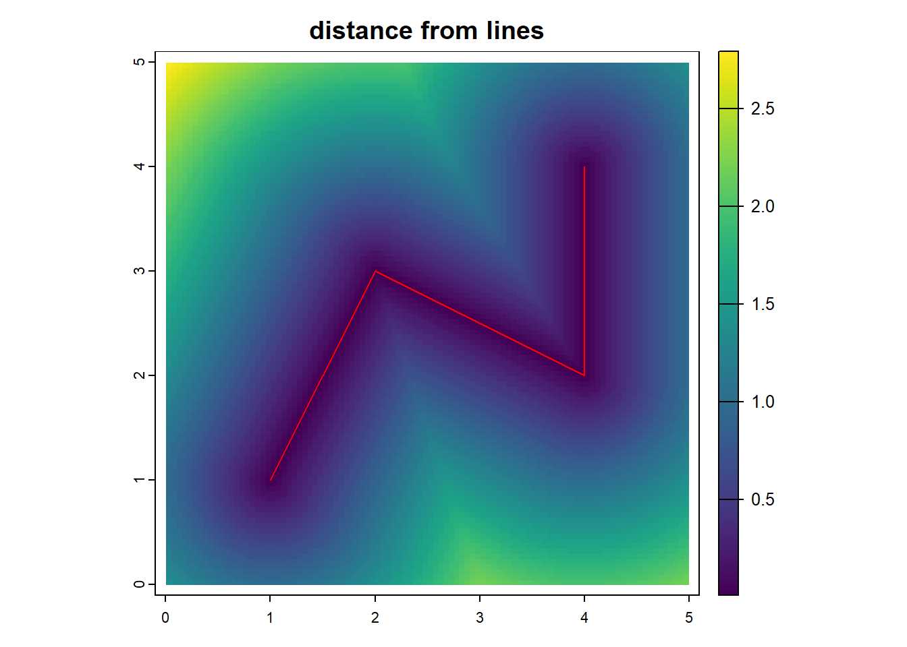
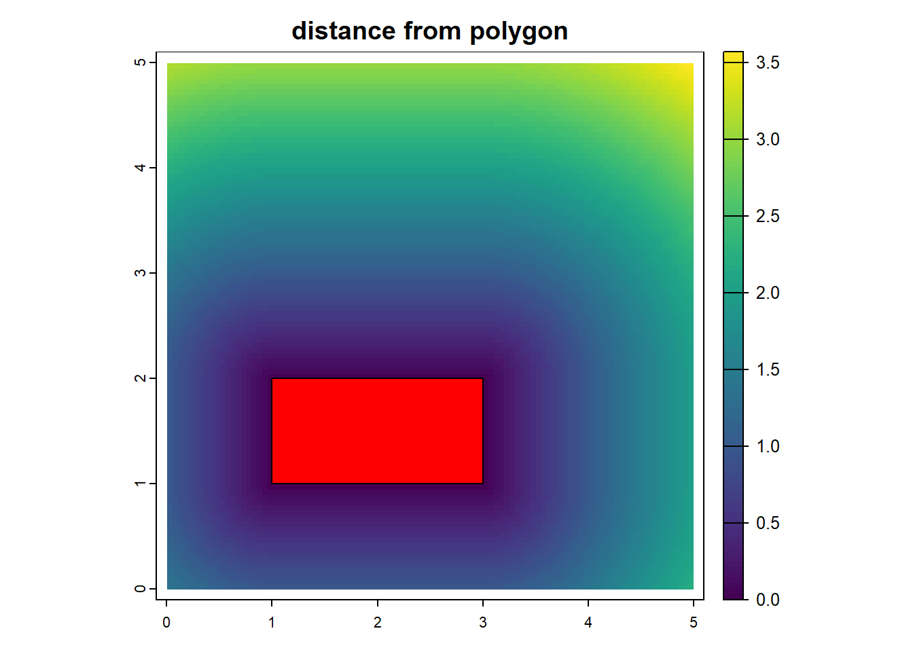

18 ラスターの距離
18.3 ラスターと点を作成
理解をするために、簡単な5x5ラスターと、その中心となる点(2.5,2.5)を用意します。
#Create s raster
r_s = rast(
ncol=5,nrow=5,
xmin=0, xmax=5, ymin=0, ymax=5,
crs="local"
)
values(r_s) = 0
#Create point vector
p_df = data.frame(rbind(
c(2.5,2.5)
))
p_vec = vect(p_df, geom=c("X1", "X2"), crs=crs(r_s))
p_vec## class : SpatVector
## geometry : points
## dimensions : 1, 0 (geometries, attributes)
## extent : 2.5, 2.5, 2.5, 2.5 (xmin, xmax, ymin, ymax)
## coord. ref. : Cartesian (Meter)
18.4 点からの距離
distanceにより、距離を計算できます。素晴らしい。
#calc distance
r_d <- distance(r_s, p_vec)
r_d## class : SpatRaster
## dimensions : 5, 5, 1 (nrow, ncol, nlyr)
## resolution : 1, 1 (x, y)
## extent : 0, 5, 0, 5 (xmin, xmax, ymin, ymax)
## coord. ref. : Cartesian (Meter)
## source(s) : memory
## name : lyr.1
## min value : 0.000000
## max value : 2.828427
plot(r_d,main="distance from point",buffer=TRUE,type = 'continuous',decreasing=TRUE)
text(r_d,col="white",digits=1)
points(p_vec,col="red",cex=1)
18.5 複数の点
複数の点でも計算しましょう。点から一番近い距離を簡単に求められるなんて最高です。これは、もはやボロノイです。美しい。
#Create s raster
r_s = rast(
ncol=1000,nrow=1000,
xmin=0, xmax=100, ymin=0, ymax=100,
crs="local"
)
values(r_s) = 0
#Create point vector
test_n = 10
p_df = data.frame(
X=as.integer(runif(test_n,0,99)),
Y=as.integer(runif(test_n,0,99))
)
p_vec = vect(p_df, geom=c("X", "Y"), crs=crs(r_s))
#output
#plot(r_s)
#points(p_vec,col="red",cex=1)
#distance
r_d <- distance(r_s, p_vec)
r_d## class : SpatRaster
## dimensions : 1000, 1000, 1 (nrow, ncol, nlyr)
## resolution : 0.1, 0.1 (x, y)
## extent : 0, 100, 0, 100 (xmin, xmax, ymin, ymax)
## coord. ref. : Cartesian (Meter)
## source(s) : memory
## name : lyr.1
## min value : 0.07071068
## max value : 44.12714584
18.6 ラインからのラスター距離
ラインからの距離も。
#Create s raster
r_s = rast(
ncol=100,nrow=100,
xmin=0, xmax=5, ymin=0, ymax=5,
crs="local"
)
#Create Line
vec1 = rbind(c(1,1),c(2,3),c(4,2),c(4,4))
p_vec = vect(list(vec1), "lines", crs="local") %>% aggregate()
#distance
r_d <- distance(r_s, p_vec)
r_d## class : SpatRaster
## dimensions : 100, 100, 1 (nrow, ncol, nlyr)
## resolution : 0.05, 0.05 (x, y)
## extent : 0, 5, 0, 5 (xmin, xmax, ymin, ymax)
## coord. ref. : Cartesian (Meter)
## source(s) : memory
## name : lyr.1
## min value : 0.01118034
## max value : 2.79307179
18.7 ポリゴンからのラスター距離
ポリゴンからの距離も。
#Create s raster
r_s = rast(
ncol=100,nrow=100,
xmin=0, xmax=5, ymin=0, ymax=5,
crs="local"
)
#Create Line
vec1 = rbind(c(1,1),c(1,2),c(3,2),c(3,1),c(1,1))
p_vec = vect(list(vec1), "Polygons", crs="local") %>% aggregate()
#distance
r_d <- distance(r_s, p_vec)
r_d## class : SpatRaster
## dimensions : 100, 100, 1 (nrow, ncol, nlyr)
## resolution : 0.05, 0.05 (x, y)
## extent : 0, 5, 0, 5 (xmin, xmax, ymin, ymax)
## coord. ref. : Cartesian (Meter)
## source(s) : memory
## name : lyr.1
## min value : 0.000000
## max value : 3.570889